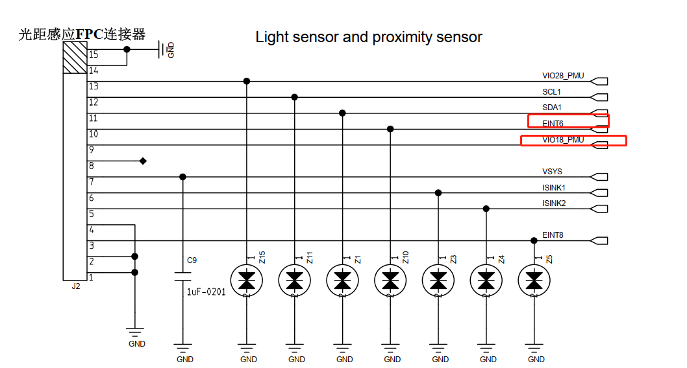

概述
光距感sensor ltr553 sensorhub调试记录
硬件
目前kernel端是通的，sensorhub一直不支持。
ITEM |
LTR-553ALS |
|---|---|
I2C总线及地址 |
i2c1 0x23 |
eint_num中断号 |
EINT6 |
供电 |
VIO18_PUM |

1.sensorlist无法获取
1.首先按照移植步骤，将ltr553驱动移植到sensorhub中，发现sensorlist中并没有支持，先看一下getsensorlist接口流程：
vendor/mediatek/proprietary/hardware/sensor/hidl/1.0/Sensors.cpp:
//由上面HIDL层工作流程分析中的sensors_open_1()可知，会调用Hal层sensors.cpp .open = open_sensors, 由此入口正式进入到Hal层
* open = open_sensors
* open_sensors()
* init_sensors()
* mSensorList = SensorList::getInstance();
* SensorList *mInterface = new SensorList
* SensorList::SensorList()
* SensorList::initSensorList() //初始化sensor列表，这里通过Projectconfig.mk相关宏配置来实现是否需要添加对应传感器到SensorList
* ALOGI("defaultSensorListCount=%u\n", static_cast<unsigned int>(mSensorList.size())); //打印系统所有支持
* TEMP_FAILURE_RETRY(open("/dev/sensorlist", O_RDWR)); //sensorlist驱动open函数
* TEMP_FAILURE_RETRY(read(fd, sensorlist_info, sizeof(sensorlist_info))); //从驱动中读取sensorlist name，并将读取成功的支持列表放入sensorlist_info数组
* ALOGI("sensor=%d, name=%s\n", handle_to_sensor(handle),sensorlist_info[handle].name); //打印所有支持的sensorlist
* mSensorList->getSensorList(&list) //返回支持列表
实际打开了11个sensor，却只支持9个，打印如下：
行 1413: 02-15 10:32:48.258333 728 728 D SensorList: initSensorList terminal_type: 1
行 1414: 02-15 10:32:48.258591 728 728 I SensorList: defaultSensorListCount=11
行 1414: 02-15 10:32:48.258591 728 728 I SensorList: defaultSensorListCount=11
行 1427: 02-15 10:32:48.270765 728 728 I SensorList: sensor=0, name=sc7a20
行 1429: 02-15 10:32:48.270813 728 728 I SensorList: sensor=3, name=NULL
行 1430: 02-15 10:32:48.270839 728 728 I SensorList: removeSensor=3
行 1431: 02-15 10:32:48.270874 728 728 I SensorList: sensor=1, name=memsic
行 1432: 02-15 10:32:48.270935 728 728 I SensorList: sensor=4, name=NULL
行 1433: 02-15 10:32:48.270957 728 728 I SensorList: removeSensor=4
行 1435: 02-15 10:32:48.270976 728 728 I SensorList: sensor=7, name=NULL
行 1436: 02-15 10:32:48.271001 728 728 I SensorList: removeSensor=7
行 1438: 02-15 10:32:48.271024 728 728 I SensorList: sensor=5, name=NULL
行 1440: 02-15 10:32:48.271062 728 728 I SensorList: removeSensor=5
行 1441: 02-15 10:32:48.271086 728 728 I SensorList: sensor=71, name=NULL
行 1442: 02-15 10:32:48.271110 728 728 I SensorList: removeSensor=71
行 1443: 02-15 10:32:48.271226 728 728 I SensorList: newSensorListCount=9
行 1443: 02-15 10:32:48.271226 728 728 I SensorList: newSensorListCount=9
2.继续看看sensorlist驱动read函数到底是读取了什么：
drivers/misc/mediatek/sensors-1.0/hwmon/sensor_list/sensor_list.c：
static const struct file_operations sensorlist_fops = {
.owner = THIS_MODULE,
.open = sensorlist_open,
.read = sensorlist_read,
};
static struct miscdevice sensorlist_miscdev = {
.minor = MISC_DYNAMIC_MINOR,
.name = "sensorlist",
.fops = &sensorlist_fops,
};
* sensorlist_init(void)
* misc_register(&sensorlist_miscdev); //生成/dev/sensorlist misc驱动节点
* sensorlist_read()
* copy_to_user(buf, sensorlist_info, count) //拷贝只用户空间
* INIT_WORK(&sensorlist_work, sensorlist_get_deviceinfo); //创建sensorlist_work工作队列
* sensorlist_get_deviceinfo()
* sensor_set_cmd_to_hub(sensor,CUST_ACTION_GET_SENSOR_INFO, &devinfo); //重要，通过IPI获取scp信息，IPI通信请参考0002_Android_SCP_IPI.md
* strlcpy(sensorlist_info[handle].name,devinfo.name,sizeof(sensorlist_info[handle].name)); // 赋值填充sensorlist_info列表
* scp_power_monitor_register(&scp_ready_notifier); //注册scp启动通知链
* scp_ready_event(uint8_t event, void *ptr) //通知链函数
* case SENSOR_POWER_UP:
* schedule_work(&sensorlist_work); //scp启动后开启sensorlist_work工作队列
3.也就是说kernel通过
sensor_set_cmd_to_hub接口发送IPI请求从scp获取sensorlist_info[handle].name，继续看看scp到底是处理IPI的：
* vendor/mediatek/proprietary/tinysys/freertos/source/middleware/contexthub/contexthub_fw.c
* INTERNAL_APP_INIT(APP_ID_MAKE(APP_ID_VENDOR_MTK, MTK_APP_ID_WRAP(SENS_TYPE_INVALID, 0, 0)), 0, contextHubFwStart, contextHubFwEnd, contextHubFwHandleEvent);
* static bool contextHubFwStart(uint32_t tid)
* ipi_ret = scp_ipi_registration(IPI_SENSOR, contextHubIpiHandler, "chre_fw_ipi");
* static void contextHubIpiHandler(int id, void *data, unsigned int len)
* osEnqueuePrivateEvt(EVT_IPI_RX, NULL, NULL, mTask.id);
* 进入OS系统消息处理，最终传到下面这个函数
* static void contextHubFwHandleEvent(uint32_t evtType, const void* evtData)
* case EVT_IPI_RX:
* contextHubHandleIpiRxEvent();
* cmd = contextHubFindCmd(mTask.ipi_req.action);
* const static struct ContextHubCmd mContextHubCmds[]
* CONTEXTHUB_CMD(SENSOR_HUB_SET_CUST, contextHubFwSetCust, contextHubFwSetCustAck),
* static int contextHubFwSetCust(SCP_SENSOR_HUB_REQ *req, struct data_unit_t *data)
* set_cust_req = (SCP_SENSOR_HUB_SET_CUST_REQ *)req;
* mtkType = apIdToMtkType(set_cust_req->sensorType);
* ret = contextHubDispatchCust(mtkTypeToChreType(mtkType), set_cust_req);
* case CUST_ACTION_GET_SENSOR_INFO: //重要，承接kernel发下来的指令
* sensorCoreGetSensorInfo(sensType, &cust_req->getInfo.sensorInfo);
* int8_t handle = mSensorCoreList[sensType]; //上层传下来的sensor类型
* mCoreInfo = &mInfoCoreList[handle];
* CoreInfo->getSensorInfo(data); //重要，调用具体sensor的getSensorInfo
* middleware/contexthub/MEMS_Driver/alsps/ltr553.c
* static int ltr553_register_core(I2cCallbackF i2cCallBack, SpiCbkF spiCallBack, void *next_state,
* #ifdef SUPPORT_GET_SENSOR_INFO //重要 ltr553.h中定义
* mInfo.getSensorInfo = alsGetSensorInfo;
* mInfo.getSensorInfo = psGetSensorInfo;
#ifdef SUPPORT_GET_SENSOR_INFO
static void psGetSensorInfo(struct sensorInfo_t *data)
{
osLog(LOG_ERROR, "%s =====>", __func__);
strncpy(data->name, "ltr553_p", sizeof(data->name)); //赋值sensorlist ps name
}
static void alsGetSensorInfo(struct sensorInfo_t *data)
{
osLog(LOG_ERROR, "%s =====>", __func__);
strncpy(data->name, "ltr553_l", sizeof(data->name)); //赋值sensorlist als name
}
#endif
4.问题找到了，
ltr553.h中fae给的代码并没有定义宏SUPPORT_GET_SENSOR_INFO，打开宏定义后，sensorlist支持了，打印如下：
02-17 13:03:49.247690 724 724 I SensorList: sensor=0, name=sc7a20
02-17 13:03:49.247954 724 724 I SensorList: sensor=3, name=NULL
02-17 13:03:49.248055 724 724 I SensorList: removeSensor=3
02-17 13:03:49.248118 724 724 I SensorList: sensor=1, name=memsic
02-17 13:03:49.248191 724 724 I SensorList: sensor=4, name=ltr553_l 刚好是sensorhub中定义的
02-17 13:03:49.248249 724 724 I SensorList: sensor=7, name=ltr553_p
02-17 13:03:49.248308 724 724 I SensorList: sensor=5, name=NULL
02-17 13:03:49.248363 724 724 I SensorList: removeSensor=5
02-17 13:03:49.248468 724 724 I SensorList: sensor=71, name=NULL
02-17 13:03:49.248525 724 724 I SensorList: removeSensor=71
02-17 13:03:49.248769 724 724 I SensorList: newSensorListCount=11
02-17 13:03:49.249218 724 724 E SensorContext: sensors_poll_context_t constructor.
02-17 13:03:49.249645 724 724 E SensorSaved: (/mnt/vendor/nvcfg) exist
PS及ALS优化(包括动态校准及数据算法）
1.PS动态校准移植
PS传感器一般都是靠近3cm，远离5cm。每次开启监听都会获取一个noise值，相当于一个初始值，如果旁边有遮挡，这个noise值会很大。所以PS传感器每次会根据开启监听后的noise值进行动态阈值校准：
middleware/contexthub/MEMS_Driver/alsps/ltr553.c:
* sensorFsmCmd(STATE_GET_PS_RAW_DATA, STATE_SAMPLE_PS_DONE, ltr553_get_ps_raw_data),
* ltr553_ps_calibration();
* ltr553_ps_get_thres(mTask.ps_xt_val); //动态阈值算法
* ltr553_ps_set_threshold(mTask.ps_threshold_high, mTask.ps_threshold_low); //i2c设置
#ifdef PS_DYNAMIC_CALI
static int ltr553_ps_get_thres(uint16_t noise)
{
int ps_thd_val_low, ps_thd_val_high;
int default_noise = 180;
osLog(LOG_ERROR, "%s =====>", __func__);
if (noise < 100) {
ps_thd_val_high = noise + 48;
ps_thd_val_low = noise + 31;
}
else if (noise < 200) {
ps_thd_val_high = noise + 48;
ps_thd_val_low = noise + 31;
}
else if (noise < 300) {
ps_thd_val_high = noise + 48;
ps_thd_val_low = noise + 31;
}
else if (noise < 400) {
ps_thd_val_high = noise + 48;
ps_thd_val_low = noise + 31;
}
else if (noise < 600) {
ps_thd_val_high = noise + 90;
ps_thd_val_low = noise + 70;
}
else if (noise < 1000) {
ps_thd_val_high = noise + 280;
ps_thd_val_low = noise + 140;
}
else if (noise < 1250) {
ps_thd_val_high = noise + 400;
ps_thd_val_low = noise + 240;
}
else {
if(default_noise != 0) {
ps_thd_val_high = default_noise + 48;
ps_thd_val_low = default_noise + 31;
} else {
ps_thd_val_high = mTask.ps_threshold_high;
ps_thd_val_low = mTask.ps_threshold_low;
}
}
osLog(LOG_INFO, "%s:noise = %d\n", __func__, noise);
osLog(LOG_INFO, "%s:ps_thd_val_high = %d\n", __func__, ps_thd_val_high);
osLog(LOG_INFO, "%s:ps_thd_val_low = %d\n", __func__, ps_thd_val_low);
mTask.ps_threshold_low = ps_thd_val_low;
mTask.ps_threshold_high = ps_thd_val_high;
return 0;
}
每次注册监听都会计算一次阈值，可以看到
ltr553_ps_calibration采样8次，算出来一个平均noise值299，再传入ltr553_ps_get_thres函数计算出来ps_thd_val_high和ps_thd_val_low分别是347和330，含义就是当ps值大于347时，系统上报0此时是靠近，当值小于330时，远离且上报1，另外framework里面对应的是1和2。
[330.645]sensorPowerPs on:1, nowOn:0
[330.645]ps: enable done
[330.646]sensorRatePs rate:15360, latency:66670592
[330.646]ps: ratechg done, timerdelay = 0
[330.659]hostintf: 330659688249, chreType:1, rate:15359, latency:100000000, cmd:0!
[330.662]hostintf: 330662581480, chreType:1, rate:15359, latency:100000000, cmd:1!
[330.662]on or upload, type:1, rate:fffffff0, latency:ffffffffffffffff
[330.846][fsm]alsps error: don't support state:0x3
[330.865]prox ===========================> intr occur, is new data
[330.865]ltr553_get_ps_raw_data =====> ps_raw_data:297
[330.865]ltr553_ps_calibration: raw_data_unsigned: 297, i : 1, sum : 297
[330.865]ps: data update:1
[331.157]hostintf: 331157313943, chreType:13, rate:51200, latency:0, cmd:1!
[331.157]sensorRatePs rate:51200, latency:19999744
[331.157]ps: ratechg done, timerdelay = 0
[331.184]prox ===========================> intr occur, is new data
[331.184]ltr553_get_ps_raw_data =====> ps_raw_data:300
[331.184]ltr553_ps_calibration: raw_data_unsigned: 300, i : 2, sum : 597
[331.357][fsm]alsps error: don't support state:0x3
[331.503]prox ===========================> intr occur, is new data
[331.503]ltr553_get_ps_raw_data =====> ps_raw_data:301
[331.503]ltr553_ps_calibration: raw_data_unsigned: 301, i : 3, sum : 898
[331.821]prox ===========================> intr occur, is new data
[331.822]ltr553_get_ps_raw_data =====> ps_raw_data:300
[331.822]ltr553_ps_calibration: raw_data_unsigned: 300, i : 4, sum : 1198
[332.140]prox ===========================> intr occur, is new data
[332.140]ltr553_get_ps_raw_data =====> ps_raw_data:298
[332.140]ltr553_ps_calibration: raw_data_unsigned: 298, i : 5, sum : 1496
[332.459]prox ===========================> intr occur, is new data
[332.459]ltr553_get_ps_raw_data =====> ps_raw_data:299
[332.459]ltr553_ps_calibration: raw_data_unsigned: 299, i : 6, sum : 1795
[332.778]prox ===========================> intr occur, is new data
[332.778]ltr553_get_ps_raw_data =====> ps_raw_data:299
[332.778]ltr553_ps_calibration: raw_data_unsigned: 299, i : 7, sum : 2094
[333.097]prox ===========================> intr occur, is new data
[333.097]ltr553_get_ps_raw_data =====> ps_raw_data:300
[333.097]ltr553_ps_calibration: raw_data_unsigned: 300, i : 8, sum : 2394
[333.097]ltr553_ps_calibration: ps_xt_val: 299
[333.097]ltr553_ps_get_thres:noise = 299
[333.097]ltr553_ps_get_thres:ps_thd_val_high = 347
[333.097]ltr553_ps_get_thres:ps_thd_val_low = 330
framework打印：
03-24 15:28:58.601 803 894 I Proximity: distance = 1 //靠近
03-24 15:28:59.875 803 894 I Proximity: distance = 2 //远离
2.ALS数据算法分析
cust_alsps.c
#ifdef CFG_LTR553_SUPPORT
{
.name = "ltr553",
.i2c_num = 0,
.i2c_addr = {0x23, 0},
.polling_mode_ps = 0,
.polling_mode_als = 1,
.als_level = {1, 9, 36, 59, 82, 132, 205, 273, 500, 845, 1136, 1545, 2364, 4655, 6982},
.als_value = {0, 10, 40, 115, 145, 180, 222, 360, 460, 550, 930, 1250, 1700, 2600, 5120, 7680},
.ps_threshold_high = 70,
.ps_threshold_low = 40,
.eint_num = 6,
},
#endif
* sensorFsmCmd(STATE_GET_ALS_DATA, STATE_SAMPLE_ALS_DONE, ltr553_get_als_value),
* mTask.als_raw_data = ltr553_als_read(); 获取原始数据
* mTask.data[0].als_data = getLuxFromAlsData(); 将原始数据转换成value值
* txTransferDataInfo(&mTask.dataInfo, 1, &mTask.data[0]);
原始数据算法如下，看了fae内部datasheet也是这个算法：
static int ltr553_als_read(void)
{
int alsval_ch0;
int alsval_ch1;
int luxdata_int;
int ratio;
osLog(LOG_ERROR, "%s =====>", __func__);
alsval_ch1 = ((mTask.rxBuf[1] << 8) | mTask.rxBuf[0]);
alsval_ch0 = ((mTask.rxBuf[3] << 8) | mTask.rxBuf[2]);
if ((alsval_ch1 == 0) || (alsval_ch0 == 0))
{
luxdata_int = 0;
return luxdata_int;
}
ratio = (alsval_ch1 * 100) / (alsval_ch0 + alsval_ch1);
osLog(LOG_INFO, "ratio = %d gainrange = %d\n", ratio, mTask.als_gain_fac);
if (ratio < 45) {
luxdata_int = (((17743 * alsval_ch0) + (11059 * alsval_ch1)) / mTask.als_gain_fac) / 1000; //本来这个分母是10000的，但是发现kernel里面是1000，改成一样
}
else if ((ratio < 64) && (ratio >= 45)) {
luxdata_int = (((42785 * alsval_ch0) - (19548 * alsval_ch1)) / mTask.als_gain_fac) / 1000;
}
else if ((ratio < 85) && (ratio >= 64)) {
luxdata_int = (((5926 * alsval_ch0) + (1185 * alsval_ch1)) / mTask.als_gain_fac) / 1000;
}
else {
luxdata_int = 0;
}
osLog(LOG_INFO, "ltr553_als_read: als_value_lux = %d\n", luxdata_int);
return luxdata_int;
}
getLuxFromAlsData函数是将原始数据als_level按照一定比例转换为als_value，也就是说als_value就是实际app获取的LUX值，经过一次具体算法如下：
static int getLuxFromAlsData(void) {
int idx;
int invalid = 0;
int als_level_num, als_value_num, als_diff;
osLog(LOG_ERROR, "%s =====>", __func__);
als_level_num = sizeof(mTask.hw->als_level) / sizeof(mTask.hw->als_level[0]);
als_value_num = sizeof(mTask.hw->als_value) / sizeof(mTask.hw->als_value[0]);
als_diff = als_value_num - als_level_num;
for (idx = 0; idx < als_level_num; idx++) {
if (mTask.als_raw_data < mTask.hw->als_level[idx]) {
break;
}
}
if (idx >= als_value_num) {
idx = als_value_num - 1;
}
if (1 == mTask.als_debounce_on) {
if (check_timeout(&mTask.als_debounce_end)) {
mTask.als_debounce_on = 0;
}
if (1 == mTask.als_debounce_on) {
invalid = 1;
}
}
if (!invalid) {
int level_high, level_low, level_diff, value_high, value_low, value_diff, value = 0;
if (idx >= als_level_num) {
level_high = mTask.hw->als_level[idx - als_diff];
level_low = (idx > 0) ? mTask.hw->als_level[idx - 1 - als_diff] : 0;
} else {
level_high = mTask.hw->als_level[idx];
level_low = (idx > 0) ? mTask.hw->als_level[idx - 1] : 0;
}
level_diff = level_high - level_low;
value_high = mTask.hw->als_value[idx];
value_low = (idx > 0) ? mTask.hw->als_value[idx - 1] : 0;
value_diff = value_high - value_low;
if ((level_low >= level_high) || (value_low >= value_high))
value = value_low;
else
value = (level_diff * value_low + (mTask.als_raw_data - level_low) * value_diff + ((
level_diff + 1) >> 1)) / level_diff;
return value;
}
return -1;
}
kernel中原始数据转换算法还不一样，直接是判断为某个区间取得固定值，不圆滑，如下：
* static int ltr559_i2c_probe(struct i2c_client *client, const struct i2c_device_id *id)
* als_data.get_data = als_get_data;
* ltr559_obj->als = ltr559_als_read(ltr559_obj->client, <r559_obj->als); 获取原始数据
* *value = ltr559_get_als_value(ltr559_obj, ltr559_obj->als); 原始数据转换
static int ltr559_get_als_value(struct ltr559_priv *obj, u16 als)
{
int idx;
int invalid = 0;
// APS_DBG("als = %d\n",als);
1.先算出原始数据是level值的哪个区间idx。
for(idx = 0; idx < obj->als_level_num; idx++)
{
if(als < obj->hw->als_level[idx])
{
break;
}
}
if(idx >= obj->als_value_num)
{
APS_ERR("exceed range\n");
idx = obj->als_value_num - 1;
}
if(1 == atomic_read(&obj->als_deb_on))
{
unsigned long endt = atomic_read(&obj->als_deb_end);
if(time_after(jiffies, endt))
{
atomic_set(&obj->als_deb_on, 0);
}
if(1 == atomic_read(&obj->als_deb_on))
{
invalid = 1;
}
}
2.直接返回value[idx]，太简单了吧
if(!invalid)
{
// APS_DBG("ALS: %05d => %05d\n", als, obj->hw->als_value[idx]);
return obj->hw->als_value[idx];
}
else
{
// APS_ERR("ALS: %05d => %05d (-1)\n", als, obj->hw->als_value[idx]);
return -1;
}
}
数据上报
这里PS采用的是中断的方式上报数据，ALS采用的是轮询，首先介绍PS中断上报：
#ifdef CFG_LTR553_SUPPORT
{
.name = "ltr553",
.i2c_num = 0,
.i2c_addr = {0x23, 0},
.polling_mode_ps = 0,
.polling_mode_als = 1,
.als_level = {1, 9, 36, 59, 82, 132, 205, 273, 500, 845, 1136, 1545, 2364, 4655, 6982},
.als_value = {0, 10, 40, 115, 145, 180, 222, 360, 460, 550, 930, 1250, 1700, 2600, 5120, 7680},
.ps_threshold_high = 70,
.ps_threshold_low = 40,
.eint_num = 6,
},
#endif
1.PS数据上报
中断打印如下：
[499.932]prox ===========================> intr occur, is new data //中断标志
[499.932]ltr553_get_ps_raw_data =====> ps_raw_data:80 ltr553_get_ps_raw_data函数获取数据
[499.932]ps: data update:0eshold =====>
[499.932]processPendingEvt 44444
[499.932]processPendingEvt 44444
[499.932]processPendingEvt 44444
[499.932]processPendingEvt 55555555
[499.932]processPendingEvt 55555555
[499.932]processPendingEvt 55555555
[499.932]processPendingEvt 666666666
[499.932]processPendingEvt 666666666
[499.932]processPendingEvt 666666666
1.中断注册发送
sensorFsmCmd(STATE_GET_PS_FLG, STATE_GET_PS_RAW_DATA, ltr553_get_ps_status), //这里是中断标志位，当有中断来会打印intr occur
* ltr553_get_ps_status()
* mTask.txBuf[0] = LTR553_ALS_PS_STATUS;
* i2cMasterTxRx(mTask.hw->i2c_num, mTask.i2c_addr, mTask.txBuf, 1, //i2c读取0x8C寄存器,中断状态
/* init state */
sensorFsmCmd(STATE_SET_PS_THDL, STATE_SETUP_EINT, ltr553_set_ps_thdl),
* mt_eint_registration(mTask.hw->eint_num, LEVEL_SENSITIVE, LOW_LEVEL_TRIGGER, ltr553_eint_handler, EINT_INT_UNMASK,
* ltr553_eint_handler(int arg) //中断上半部分
* alsPsInterruptOccur(void)
* osEnqueuePrivateEvt(EVT_SENSOR_INTR, NULL, NULL, mTask.id); //发送EVT_SENSOR_INTR EVENT
2.EVT_SENSOR_INTR EVENT中断事件处理：
static void handleEvent(uint32_t evtType, const void* evtData)
* case EVT_SENSOR_INTR: {
* sensorFsmRunState(&dataInfo, &mTask.fsm, (const void *)CHIP_SAMPLING_PS, &i2cCallback, &spiCallback); //执行CHIP_SAMPLING_ALS FSM函数
* ltr553_get_ps_raw_data()
* ltr553_ps_calibration(); //动态阈值校准
* ltr553_ps_set_threshold(mTask.ps_threshold_high, 0); //设置ps_threshold_high阈值
* ltr553_ps_set_threshold(2047, mTask.ps_threshold_low); //设置ps_threshold_low阈值
3.执行STATE_SAMPLE_PS_DONE EVENT事件，调用osEnqueueEvt上报数据：
* handleEvent(uint32_t evtType, const void* evtData)
* case EVT_SENSOR_EVENT: {
* handleSensorEvent(evtData);
* case CHIP_SAMPLING_PS_DONE: {
* osLog(LOG_INFO, "ps: data update:%"PRIu32"\n", mTask.mSensorPerUnit[PS].last_sample.prox_data); //打印ps: data update:
* osEnqueueEvt(sensorGetMyEventType(SENS_TYPE_PROX), sample.vptr, NULL); //重要，发送Event Queue，Event Queue 的处理是先来先服务，这里就是上报数据
* processPendingEvt(); //处理挂起sensor，只是开机做一次校准，后续都不做了。
* configEvent(&mTask.mSensorPerUnit[handle], &mTask.mSensorPerUnit[handle].pendConfig); //这里处理电源和设置rate
* if (mTask.pendingCali[handle]) {
* mSensorOps[handle].sensorCalibrate((void *)handle); //这里只在开机的时候跑一次
& if (mTask.pendingCaliCfg[handle]) {
* mSensorOps[handle].sensorCfgData(mTask.mSensorPerUnit[handle].pendCaliCfg,//这里只在开机的时候跑一次
2.ALS数据上报
打印如下：
[3275.847]sensorPowerAls on:1, nowOn:0
[3275.847]als: enable doneebounce_on =====>
[3275.847]processPendingEvt 44444
[3275.847]processPendingEvt 44444
[3275.847]processPendingEvt 44444
[3275.847]processPendingEvt 55555555
[3275.847]processPendingEvt 55555555
[3275.847]processPendingEvt 55555555
[3275.847]processPendingEvt 666666666
[3275.847]processPendingEvt 666666666
[3275.847]processPendingEvt 666666666
[3275.847]sensorRateAls rate:15360, latency:66670592
[3275.847]als: ratechg done timerDelay:66666666ns
[3275.848]processPendingEvt 44444
[3275.848]processPendingEvt 44444
[3275.848]processPendingEvt 44444
[3275.848]processPendingEvt 55555555
[3275.848]processPendingEvt 55555555
[3275.848]processPendingEvt 55555555
[3275.848]processPendingEvt 666666666
[3275.848]processPendingEvt 666666666
[3275.848]processPendingEvt 666666666
[3275.915]processPendingEvt 44444==>
[3275.915]processPendingEvt 44444
[3275.915]processPendingEvt 44444
[3275.915]processPendingEvt 55555555
[3275.915]processPendingEvt 55555555
[3275.915]processPendingEvt 55555555
[3275.915]processPendingEvt 666666666
[3275.915]processPendingEvt 666666666
[3275.915]processPendingEvt 666666666
[3275.982]ratio = 33 gainrange = 4=>
[3275.982]ltr553_als_read: als_value_lux = 23
这里是用的轮询的方式：
首先上层注册监听，将打开ALS传感器电源，这里在初始化函数alsSensorRegister就已经赋值了上电函数ops，相当于sensorhub中的CHIP_ALS_ENABLE_DONE事件：
* sensorPowerAls() //先上电，打印sensorPowerAls on:1, nowOn:0
└── handleSensorEvent(evtData);
└── case CHIP_ALS_ENABLE_DONE: {
├── osLog(LOG_INFO, "als: enable done\n"); //打印als: enable done
└── processPendingEvt(); //处理挂起的sensor，这里就是打印的44444这些，没什么用
设置rate上报速率
* sensorRateAls(uint32_t rate, uint64_t latency, void *cookie) //打印sensorRateAls rate:
└── setAlsHwRate(rate);
└── sensorFsmRunState(&dataInfo, &mTask.fsm, (const void *)CHIP_ALS_RATECHG, &i2cCallback, &spiCallback);
└── ltr553_als_ratechg(I2cCallbackF i2cCallBack, SpiCbkF spiCallBack, void *next_state,
└── sensorFsmEnqueueFakeI2cEvt(i2cCallBack, next_state, SUCCESS_EVT); //啥也没干，直接执行下个state
读取数据,方式不过多解释了。
* ltr553_get_als_value
├── mTask.als_raw_data = ltr553_als_read();
├── mTask.data[0].als_data = getLuxFromAlsData();
└── sensorFsmEnqueueFakeI2cEvt(i2cCallBack, next_state, SUCCESS_EVT);
问题点
1.重启或者久休眠唤醒经常误报成靠近
查看打印，发现如下：
#开机第一次打开并没有算好靠近远离的阈值就直接断电了：
行 732: [40.469]ltr553_ps_calibration: raw_data_unsigned: 106, i : 1, sum : 106
行 748: [40.762]ltr553_ps_calibration: raw_data_unsigned: 107, i : 2, sum : 213
行 762: [41.056]ltr553_ps_calibration: raw_data_unsigned: 105, i : 3, sum : 318
行 778: [41.349]ltr553_ps_calibration: raw_data_unsigned: 106, i : 4, sum : 424
行 792: [41.642]ltr553_ps_calibration: raw_data_unsigned: 105, i : 5, sum : 529
行 808: [41.935]ltr553_ps_calibration: raw_data_unsigned: 111, i : 6, sum : 640
[41.960]hostintf: 41960463561, chreType:13, rate:51200, latency:0, cmd:0!
[41.960]sensorPowerPs on:0, nowOn:1
[41.960]ps: disable done
[42.160]sensorPowerPs on:1, nowOn:0
[42.160]ps: enable done
[42.160]sensorRatePs rate:51200, latency:19999744
[42.160]ps: ratechg done, timerdelay = 0
[42.176]hostintf: 42176225715, chreType:13, rate:51200, latency:0, cmd:0!
[42.176]sensorPowerPs on:0, nowOn:1
[42.176]ps: disable done
第二次打开，但没有继续计算阈值：
[51.283]ps: enable done
[51.283]sensorRatePs rate:15360, latency:66670592
[51.283]ps: ratechg done, timerdelay = 0
直接上报靠近：
[51.485]prox ===========================> intr occur, is new data
[51.485]ltr553_get_ps_raw_data =====> ps_raw_data:112
[51.485]ltr553_ps_calibration: raw_data_unsigned: 112, i : 1, sum : 112
[51.485]ps: data update:0
如果8次时间太长，那就改为采样五次，内核里面也是五次，代码修改：
#define PS_CALIBRATION_COUNT 8
改为：
#define PS_CALIBRATION_COUNT 5
static void ltr553_ps_calibration(void)
{
if (mTask.prox_raw_data == 0)
{
return;
}
mTask.ps_sum += mTask.prox_raw_data;
mTask.ps_counter++;
osLog(LOG_INFO, "%s: raw_data_unsigned: %d, i : %d, sum : %d\n", __func__, mTask.prox_raw_data, mTask.ps_counter, mTask.ps_sum);
if (mTask.ps_counter >= PS_CALIBRATION_COUNT)
{
mTask.ps_cali_start = 0;
mTask.ps_xt_val = mTask.ps_sum / PS_CALIBRATION_COUNT;
osLog(LOG_INFO, "%s: ps_xt_val: %d\n", __func__, mTask.ps_xt_val);
ltr553_ps_get_thres(mTask.ps_xt_val);
ltr553_ps_set_threshold(mTask.ps_threshold_high, mTask.ps_threshold_low);
}
return;
}
内核定义5次：
#ifdef GN_MTK_BSP_PS_DYNAMIC_CALI
static int ltr559_dynamic_calibrate(void)
{
//int ret = 0;
int i = 0;
int data;
int data_total = 0;
//ssize_t len = 0;
int noise = 0;
int count = 5;
...省略...
}